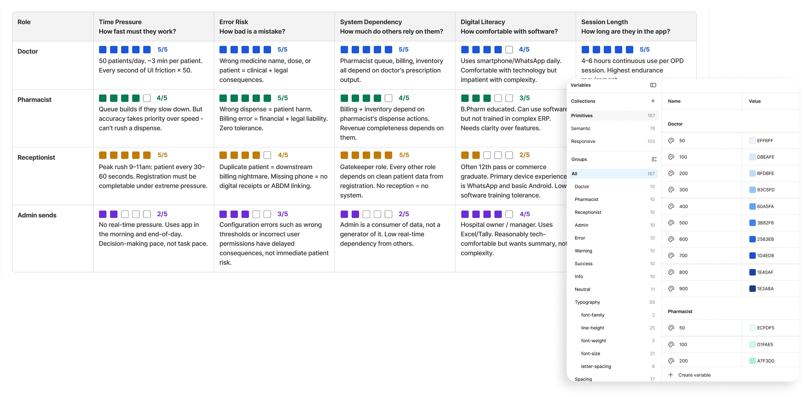
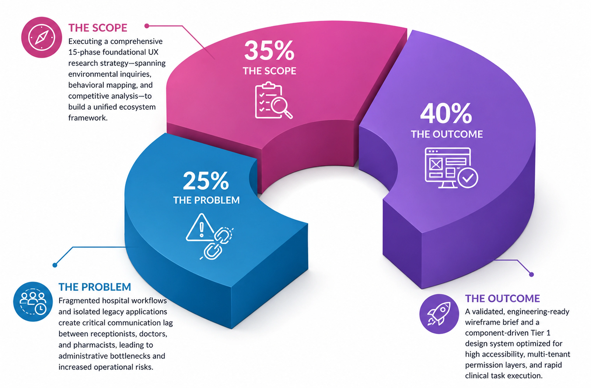
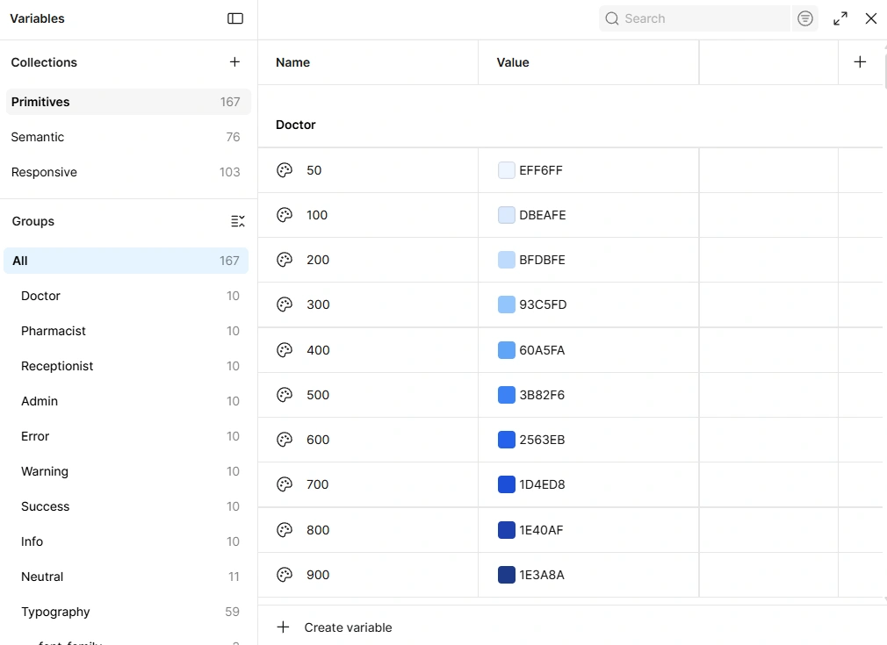
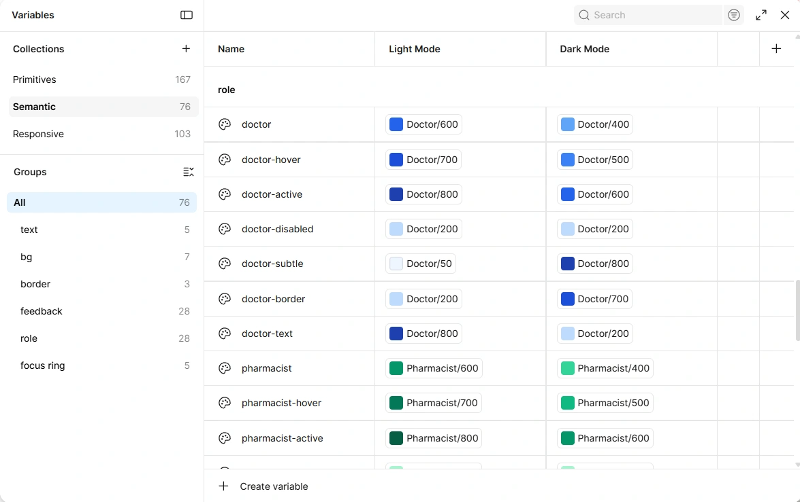
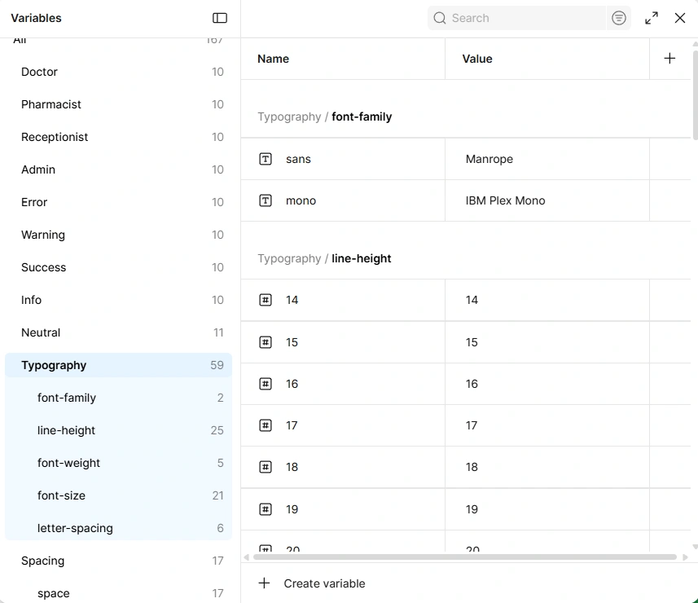
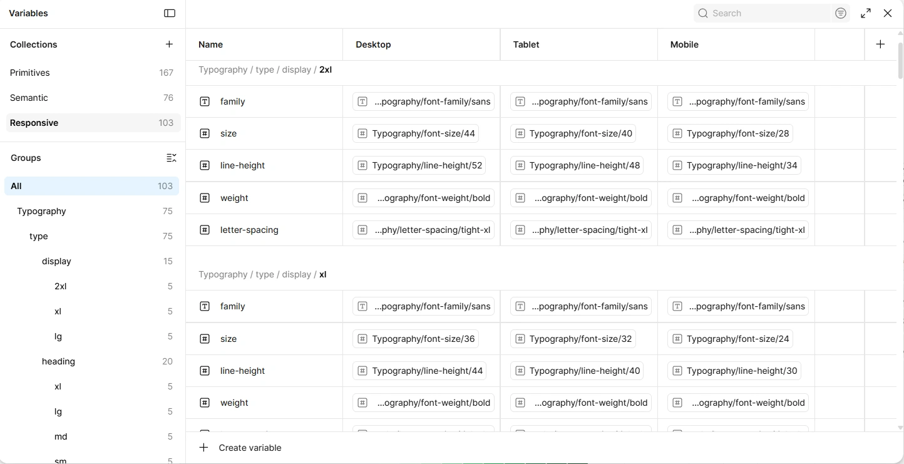
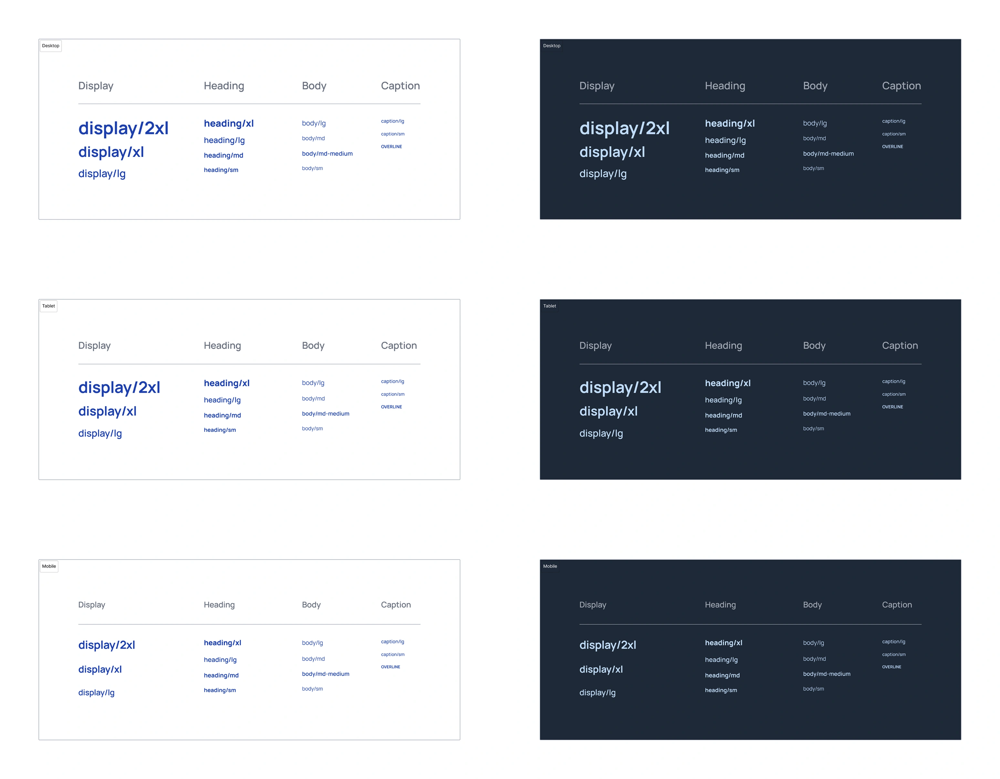

CareOS - Unifying Healthcare Workflows
Intelligent Workflows for Modern Medical Teams

Overview
CareOS is a B2B healthcare SaaS platform designed to eliminate fragmented workflows across hospitals. It connects receptionists, doctors, and pharmacists within a single ecosystem, enabling real-time patient data flow from check-in to consultation and prescription.
The project focused on designing for multi-role dependencies and high-stakes medical environments. To achieve this, I conducted an extensive 15-phase UX research sprint and developed a scalable, Tier 1 design system that prioritizes usability, accessibility, and consistency.
Through workflow analysis, journey mapping, and persona alignment, I translated complex healthcare processes into actionable insights. These findings shaped 20 "How Might We" opportunities and a structured wireframing strategy, resulting in an intuitive and efficient digital experience.
The Starting Point
The primary objective of CareOS was to replace the fragmented, high-friction legacy systems used in modern hospitals with a unified digital ecosystem. In healthcare environments, a fraction of a second can alter patient outcomes; yet, the digital tools powering these spaces are notoriously siloed.
This case study demonstrates how a deep, 15-phase empirical research sprint directly informed the creation of a cross-functional, highly accessible Tier 1 design system built to withstand the chaotic, high-stakes realities of a clinical floor.
The TL;DR Matrix

The 15-Phase Research Engine
The discovery process was structured into a 15-phase research framework to systematically analyze complex hospital operations. By breaking workflows into measurable interaction layers, the research ensured that every design decision, component, and user flow was grounded in real-world operational needs and validated insights.
Milestone I: System Scoping, Logic & Priorities
This opening milestone establishes the baseline structural boundaries, business rules, and operational constraints governing the CareOS ecosystem. Before diving into user-facing visuals, this stage maps out the underlying systemic logic, role dependencies, and high-level risk parameters that dictate how patient data dynamically moves across various hospital departments.
- Mapped core system flows and identified critical processes affecting billing and patient onboarding.
- Defined UX hypotheses and set speed benchmarks for key clinical tasks.
- Analyzed dependencies and risks to uncover operational and technical bottlenecks before workflow design.
- Mapped interactions between hospital roles to understand how actions impact downstream workflows.
- Defined dependency timelines and identified common handoff failures during patient transfers and shift changes.
- Established access controls, sync requirements, and key system questions before starting wireframes.
- Evaluated key user roles based on workload, digital skills, and work environment factors.
- Prioritized UX needs and created focused user profiles for each hospital role.
- Assessed speed–accuracy trade-offs and error impacts to guide critical system design decisions.
Milestone II: Contextual Inquiry & Atomic Workflow Mapping
This milestone shifts from abstract system architecture into the physical, chaotic reality of the hospital floor. By observing clinical environments, structuring role-specific discovery tools, and breaking down complex user operations into atomic steps, this phase bridges the gap between software capability and high-stress human execution.
- Analyzed clinic environments and peak activity periods to identify high-pressure operational scenarios.
- Mapped environmental constraints, stress factors, and common workflow interruptions affecting users.
- Derived design requirements and safety considerations from observed operational challenges.
- Established structured interview methods to ensure consistent and unbiased staff research.
- Created role-specific interview guides for clinicians, administrators, and pharmacists.
- Used roleplay scenarios to uncover user needs, pain points, and existing workflow workarounds.
- Documented five core clinical workflows, including registration, prescriptions, pharmacy operations, billing, and inpatient admissions.
- Broke each workflow into detailed, trackable steps to understand end-to-end processes.
- Identified cross-functional bottlenecks and information gaps, creating a foundation for data architecture and persona development.
Milestone III: Landscape Analysis, System Failures & Data Architecture
This milestone examines systemic vulnerabilities, market alternatives, and underlying data behaviors. By building explicit frameworks to handle software failures, analyzing the localized healthcare market, and defining real-time data sync rules, this phase establishes the structural guardrails needed to keep a clinical SaaS platform reliable, secure, and compliant.
- Identified system vulnerabilities and common human errors through a comprehensive failure analysis.
- Designed offline workflows and recovery processes to prevent data loss during connectivity issues.
- Evaluated critical edge cases and defined resilience principles for reliable system performance.
- Analyzed Indian healthcare systems and traditional paper-based workflows to understand current market practices.
- Built competitor comparison and feature analysis to identify strengths, gaps, and usability issues.
- Defined CareOS positioning and insights to improve over existing digital and manual systems.
- Defined latency limits to ensure fast real-time data sync across hospital roles.
- Set data ownership rules and access controls for secure clinical information flow.
- Designed streaming, caching, and sync systems to optimize performance and reliability across devices.
Milestone IV: Human-Centered Modeling & Interconnected Journey Mapping
This milestone translates systemic data flows and workflow rules into clear, empathetic human-centered blueprints. By modeling distinct clinical user personas and mapping an expansive, cross-functional patient journey from entry to exit, this phase aligns technical platform logic with the day-to-day human experiences of hospital staff and patients.
- Created four key personas—Doctor, Pharmacist, Receptionist, and Admin—to represent core system users.
- Mapped each persona's goals, challenges, work environment, and technology needs.
- Used behavioral insights to define personalized workflows and workspace requirements.
- Created a unified patient journey map covering all interactions from registration to discharge and pharmacy fulfillment.
- Analyzed existing workflows to identify delays, data gaps, and user friction points.
- Mapped automation opportunities and time-saving improvements to enhance operational efficiency and user experience.
Milestone V: Opportunity Frameworks & Ideation Synthesis
This milestone serves as the analytical bridge transforming thousands of raw qualitative data points, observations, and journey logs into an actionable, priority-driven design strategy. By systematically categorizing clinical paint points, framing opportunity spaces, and enforcing strict scoping boundaries, this phase refines chaotic medical realities into precise problem definitions before a single wireframe is sketched.
Phase 12 begins with a Research Insights Matrix that consolidates findings from previous research into a structured framework. Insights related to workflow friction, stress management, real-time data dependencies, and system failures are mapped to specific user roles, environments, and severity levels, ensuring that design decisions are grounded in validated user needs and operational challenges.
The phase then introduces a 20-statement How Might We (HMW) Bank, which transforms key research findings into actionable opportunity areas. These statements are grouped into four categories: Patient Experience, Billing & Administration, Clinical Workflow, and System Integrity, providing a clear foundation for solution ideation and feature development.
To prioritize opportunities effectively, an Opportunity Sizing Matrix evaluates each HMW statement based on engineering effort, clinical value, operational urgency, and organizational impact. This prioritization is reinforced by a "We Will NOT" scope definition, which establishes clear boundaries by excluding high-complexity or low-priority features from the initial product release.
Finally, the prioritized opportunities are organized into Opportunity Clusters, connecting research insights directly to future product features and workflows. This synthesis creates a data-driven feature roadmap for CareOS, guiding subsequent wireframing, requirements definition, and use-case development with a focused and scalable product vision.
Milestone VI: Product Blueprint & The Wireframe Brief
This final milestone of the research engine solidifies all prior qualitative insights, workflow breakdowns, and opportunity spaces into a highly structured structural blueprint. By defining a role-based information architecture, establishing core system design tenets, and documenting granular functional requirements, this phase compiles the comprehensive engineering brief required to build out the physical wireframes and interface components.
- Designed role-based information architecture for doctors, receptionists, and pharmacists.
- Defined navigation structures, contextual menus, and cross-role data relationships.
- Organized feature placement and workspace hierarchy before interface design.
- Defined eight core UX principles tailored for high-pressure healthcare environments.
- Established standards for usability, accessibility, error prevention, and visual consistency.
- Created design checklists and implementation guidelines to support consistent wireframe development.
- Documented detailed functional requirements, system behaviors, and data needs across core screens.
- Defined critical use cases with user actions, edge cases, and failure scenarios.
- Prioritized components and created a complete wireframe brief for design and development handoff.
The Tier - 1 Design System
To translate 15 phases of intensive medical workflow research into a reliable software interface, CareOS uses a highly tokenized Tier 1 Design System. In high-stakes healthcare environments, visual consistency, accessibility (WCAG AA), and component reliability are critical for patient safety. Even minor UI errors can lead to misinterpretation of critical data or missed high-priority alerts. The system is built for speed, clarity, and resilience across diverse hardware environments.
Foundations
The foundational layers establish the atomic rules of the CareOS interface, ensuring that core design tokens remain scalable, maintainable, and uniform across multiple product modules.
Color System
The color system utilizes a robust two-layer tokenization strategy to guarantee theme flexibility (e.g., dark mode or low-glare hospital settings) while enforcing strict interface predictability.
- Primitive Variables: The raw base color tokens that establish the absolute tonal value boundaries of our global palette.
- Semantic Variables: Contextual tokens mapped to specific UI roles, status communication, and interactive states (e.g., mapping a raw red primitive to an uneditable system alert state or an active emergency error message).


Typography
The typography architecture is optimized for rapid scannability and legibility under intense hospital floor conditions, minimizing reading lag for complex multi-column health data.
- Primitive Typography Styles: The master font styles setting up the base font family weights, explicit line heights, and absolute type scaling rules.
- Responsive Typography Matrix: A precise breakdown displaying how font configurations adapt fluidly across varying viewing breaks, tablet interfaces, and low-res desktop monitors.
- Typography in Practice: A real-world application block showcasing the type scale in use across dashboard headings, input field labels, and dense text blocks.



Core Components
This section details five core building blocks of the CareOS UI library, structured to emphasize states, behavioral consistency, and developer handoff guidelines.
Buttons
Buttons are presented as completely self-contained components due to their frequency of interaction across clinical tasks. This layout displays their full structural flexibility, variants (Primary, Secondary, Tertiary, Icon-only), and interaction states (Default, Hover, Active, Disabled).
Design Component Asset - Button
Badges & Input Fields
Badges and Input Fields are documented together to showcase how data feedback loops sit inline with user data entry points.
- Badge Architecture: Outlines status indicator patterns (e.g., Out of Stock, with Doctor, or Billing) to quickly draw a user's focus to important form blocks.
- Input Field Framework: Highlights key design considerations like explicit form placeholder logic, persistent error text states, and floating assistive labels.
Design Component Assets - Badge and Input Fields
Toggles & Checkboxes
Toggles and Checkboxes are grouped to clearly define their behavioral differences: Checkboxes are used for selecting list items, while Toggles handle instant system state changes.
- Behavioral Rules: Outlines exact rules for when to use a toggle (e.g., toggling a doctor's availability) versus a checkbox (e.g., bulk-selecting prescriptions for validation).
- State Configuration: Displays micro-interactions across unselected, selected, indeterminate, and disabled states to ensure maximum clarity during user actions.
Design Component Assets - Toggles and Checkboxes
Strategic Reflection & Future Scope
Building a B2B healthcare ecosystem requires cross-functional collaboration, engineering resources, and significant time investment. To maintain focus and quality, I established a clear scope boundary for this phase of CareOS.
The project was intentionally paused after completing the Tier 1 Design System, creating a rock-solid, tokenized foundation. This ensures future interface development can be executed seamlessly, efficiently, and with structural consistency.
Honest Limitations & Ground Realities
Design maturity is rooted in self-awareness. While this project dives incredibly deep into clinical systems logic, it is important to acknowledge its current boundaries:
- Simulated vs. Live Research: Due to the high-security protocols and compliance barriers of medical facilities, this framework relies on simulated contextual inquiries and secondary operational modeling rather than live, on-site hospital floor testing and direct clinical user interviews.
- The Prototyping Gap: The actual end-to-end interface software has not been implemented yet. Executing a platform of this magnitude is a team sport, and attempting to design hundreds of specialized medical screens single-handedly without engineering collaboration would dilute the quality of the system.
- Embracing the Imperfection: Because of these missing real-world feedback loops, certain workflows may feel unorganized or purely theoretical at this stage. I accept these gaps as an honest reflection of a solo conceptual sprint.
The Vision Behind the Hustle
"Systems thinking isn't just about drawing boxes; it's about having the grit to map out the entire forest before you even start planting a single tree."
CareOS is a reflection of my passion for product design and curiosity for solving complex problems. By independently tackling a 15-phase UX research framework and building a scalable, role-based component library from the ground up, I focused not only on creating intuitive interfaces but also on understanding how complex systems, data workflows, and systematic design foundations can work together to solve large-scale real-world healthcare challenges.